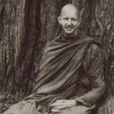

|
 |
Venerable Munindo (Keith Morgan) was born in 1951, and brought up in
Morrinsville, New Zealand (North Island). He is the son of a Presbyterian
lay preacher, and grandson of two ordained preachers. |
|
The following teaching is taken from a Friday night talk given by Venerable
Munindo at Dhammaloka Buddhist Centre in Perth, during a visit to Bodhinyana
Monastery of Western Australia. IT HAS BEEN VERY PLEASANT spending time with Ajahn Jagaro after not having seen each other for eight years. We've been talking over some of the developments that have taken place in practice and in our various communities. A rewarding reflection has come out of this as to just how steadily the Path does develop. It's wonderful to see how the quality of effort that we are able to make in practice naturally grows. I remember how, when I was first ordained in Thailand, the formal 'going for refuge' and 'taking precepts' didn't mean very much to me -- Buddham. saranam. gacchami, Dhammam. saranam. gacchami, Sangham. saranam. gacchami.... But although this formality didn't mean much to me then, I was attracted to these teachings because they spoke somehow, in a meaningful way, of 'True Refuge'. My first contact and inspiration with Buddhism had come from reading a book at university. I had a feeling at the time of, 'Great! there is something real -- something of true quality which doesn't require compromising what I feel most deeply to be right.' And that was wonderful. It often is this way in the beginning when we make contact with something we can really trust in; we have a wonderful feeling about our discovery. Then we find the Teaching says that realising this 'true quality', or to make this quality real in one's life, requires the cultivation of awareness. We are already 'kind of' aware, but our awareness doesn't do what it needs to do, which is to see the facts clearly. The Buddha said that when we see the facts of life -- when we see what is, as it is -- then there are no more problems. The Buddha had no problems because he could always see the facts. If it's not like that for us, then it's not because of life, but because of the way we see it; and that's a very helpful reflection. When I'm having problems, I can consider: the Buddha's Way meant he had no problems, whereas 'my way' means I have. Therefore, one way has to go: either 'my way' or the Buddha's Way. So we take up this training, or the Way of Dhamma, to be free from 'my way'. And this way of Dhamma begins with this first sense of trust; we feel that Truth is accessible, and verifiable to us as human beings. We don't have to wait until we die until we know what's what. We often find in life, that we are faced with a difficult situations which we want to work with, but we're not up to it. The point of such meetings as this is to actually do something about our ability to work; we have awareness, and we are choosing to work with it. We are not just to using awareness as we do in daily life, but we have set this time aside to directly cultivate it; to sit, to be still, to train the mind. When our community in England first moved to Chithurst House, it was not an easy situation. One hundred and twenty acres of forest had been given to us, with a lake and an old derelict mansion. But the local council said we had to apply for 'change of use'. So that was done -- but the answer was 'No!' So there we were with a wonderful forest in beautiful West Sussex and a potentially ideal house to live in, and yet.... Fortunately, because of a technical point, we were able to apply again; but it meant we had to wait for many months to know the result. There was tremendous doubt; would we be able to stay or not? You could get caught up in the doubt and not do any work, thinking, 'Well, they might throw us out. What's the point?' Or, you could deny doubt, work like a Trojan and get angry at anybody who dared to display any doubt. The training, however, is about seeing just the facts -- and thankfully, Ajahn Sumedho was very clear about that. The fact, then, was that that particular situation was very doubtful -- uncertain. So with right awareness, with balanced awareness, we could simply bear that uncomfortable feeling. We could bear the feeling of insecurity or doubt. Insecurity is a very unpleasant feeling. When we are children and feel that way, we seek reassurance from mum and dad. Then as we grow up, we see this feeling of insecurity as a fact of life, and learn to abide in the knowledge of the insecurity of all existence; that is, if we really grow up! If we don't really grow up, we find substitutes for our parents: a partner, possessions, belief systems, philosophies and so on. Our training is to actually feel this insecurity, and see it as 'just like this'. But without being balanced we cannot do it. In those early days at Chithurst, it was 'just like that', but there was a real temptation to get caught in an extreme position of either indulging in doubt or repressing it. In the Buddhist Way, it is clearly stated that the two extremes of 'blindly believing' on the one hand, and 'repression and denial' on the other, are false. The way that is Real is the Middle Way -- the way of gently bearing things, exactly as they are, in their raw condition. To do this, we have to train the mind until we are no longer pushing and pulling at the states that we experience. Pushing and pulling is the way of contending. And it's very easy to contend with life when it's not going the way that 'I' think it should. There was a very difficult period in my training in Thailand after I had already been a monk for about four years. As a result of a motor bike accident I had had before I was ordained, and a number of years of sitting in bad posture, my knees seized up. The doctors in Bangkok said it was severe arthritis, but nothing that a small operation couldn't fix. They said it would take two or three weeks. But after two months and three operations I was still hardly walking. There had been all kinds of complications: scar tissue, three lots of general anaesthetic and the hot season was getting at me; my mind was really in a state. I was thinking: 'My whole life as a monk is ruined. Whoever heard of a Buddhist monk who can't sit cross-legged.' Every time I saw someone sitting cross-legged I'd feel angry. I was feeling terrible, and my mind was saying, 'It shouldn't be like this; the doctor shouldn't have done it like that; the monks' rules shouldn't be this way....' It was really painful, physically and mentally. I was in a very unsatisfactory situation. Then I heard that Ajahn Chah was coming down to Bangkok. I thought if I went to see him he might be able to help in some way. His presence was always very uplifting. When I visited him I couldn't bow properly; he looked over at me and asked, 'What are you up to?' I began to complain: 'Oh Luang Por,' I said, 'It's not supposed to be this way. The doctors said two weeks and it has been two months....' I was really wallowing. With a surprised expression on his face he said to me, very powerfully: 'What do you mean, it shouldn't be this way? If it shouldn't be this, way it wouldn't be this way!' That really did something to me. I can't describe how meaningful that moment was. He pointed to exactly what I was doing that was creating the problem. There was no question about the fact of the pain; the problem was my denying that fact, and that was something I was doing. This is not just a theory. When someone offers us the reflection of exactly what we are doing, we are incredibly grateful, even if at the time we feel a bit of a twit. The pushing away is the distortion of awareness that makes problems out of life. Life can be very painful, but with right awareness there can be a discerning of the facts. When awareness, or mindfulness, matures into truth-discerning awareness (satipañña), we can bear the state we are experiencing and discern the facts. With intelligence free to consider what can be done and our human sensitivity unhindered, we don't have to deny what we feel -- we can learn from life. But if our ability to feel is numbed, if our hearts are closed, intelligence simply can't operate. We can go through so many difficult situations in life, thinking: 'Wow! I survived that one. I'll never have to go through that again,' yet before long we do. So whether we learn or not has very much to do with just how accurate our awareness is. It depends on whether we are working with 'right awareness', or the common-or-garden-variety awareness. This practice then is to train awareness -- to balance it, to gentle it, to tame it, until the pushing and pulling tendencies are gone. Just as we make problems out of difficult experiences, we can also make problems out of pleasant ones. There was an occasion when I was in New Zealand and visiting a good friend who used to be a monk with us in England. Now he is a doctor in Christchurch. He spends a lot of time in the very beautiful mountains of the South Island. At his invitation I joined him for a few days walking in the Alps. I hadn't been in the mountains for a long time. The air was good, the weather was good and it was particularly nice to be walking with a good friend. We spent time trekking, walking, talking over practice, sitting meditation ... it was wonderful. There was one morning I remember vividly. We had left very early the forest hut where we'd spent the night. It was dawn as we walked down a big stony mountain river bed. The magic light of sunrise was tipping the snow-capped mountains gold. It was so beautiful ... drinking the stream water, breathing crisp mountain air, and being in good company. Then something in my mind started up... a feeling started arising ... and it was beginning to spoil the situation. So gently paying attention to that ... carefully turning towards it and being with that feeling ... the constriction of energy that was taking place ... I could see there was a feeling of ... trying to hold on to the experience -- the experience of simple human enjoyment. I was saying to myself, 'This is how it should be.' In that moment, I could see how I was creating a problem. I was already beginning to imagine how it would be back in the English drizzle saying, 'It shouldn't be this way.' So even around pleasure we create problems by not relating directly, truly; by not relating to that which is true, but relating to that which is false, or to our fantasies. With pleasure, we can feel afraid of losing it, and fantasise in an attempt to hold on to it. With pain, we tend to dwell in memories of when it wasn't there, in an attempt to avoid it. This is how it often is in broken relationships. (And death is a kind of broken relationship.) Rather than seeing the fact of the pain, there is a tendency to go into memories of 'how it used to be' or fantasise about 'how it could be'. That is dwelling in what's not real. There is a verse in the Dhammapada: To be able to do the work of seeing the false as false and the real as real, we need to cultivate this truth-discerning awareness. We need to operate in a mode whereby we can accept the offerings of life and death completely, whole-heartedly, and discern the facts -- the Truth. So being whole-hearted means being wholly and completely sensitive; not being sensitive merely to what we like, which is 'my way', and denying what we don't like. The Buddha's Way means being single-minded about our consideration of life. And it results in an agility of mind which is intelligence; the mind is not merely conditioned; it is free to perform its proper function. This is the training, and we can be very grateful that we've been offered this training. The Buddha described this Way as being 'Well-Expounded', Svakkhata Dhamma. In other words, he said, 'You've got what you need to do what needs to be done.' We don't have to make shots in the dark hoping that we'll come across something meaningful. Here we have a complete training -- the training of body, speech and mind. We cultivate moral responsibility and work at developing the mind. We make the effort to concentrate the mind and really be in the present. All the difficulties and pitfalls that we experience along the way, we share with each other. We have Good Companions -- Kalyanamitta, members of the Sangha, and Dhamma friends, who can come together for discussion and reflection -- listening to talks and going on retreats. We can actually do what the Buddha wanted us to do. The quality of trust we have in the beginning is wonderful. It says: 'Yes, there is something to be realised. Life isn't merely an ordeal that we tolerate until we die. There is a true quality that can be seen and known.' And then, having given ourselves to the training, we find that we begin to go beyond the habitual tendencies of pushing and pulling at the experiences of pleasure and pain. And we continue until we come upon a new way of seeing. We see in a way that we've never seen before. We have a new perspective of things. 'Trust' is now verified. We need no longer be concerned with doubt about the possibility of the Way; we simply get on with it. All the training we do, including the traditions that we use, are for this purpose. They make our life situations workable. Anger becomes workable; greed, jealousy, pleasure, pain, all become something to help us grow in the direction of True Understanding. 'I go for refuge to Dhamma -- the way things actually are' takes on a new meaning for us. Then finally, and thankfully, there are beings in the world who teach from the perspective of complete trust. The Buddha's Teachings come from the perspective of complete trust. That is where life itself is something that we give ourselves into with an attitude of complete trust. There is no longer any doubt, any confusion, any despair. All that remains is complete trust in Dhamma. QUESTION: Would you comment on the statement: 'Accepting things the way they are is a passive avoidance of taking responsibility.' ANSWER: If it's avoidance of taking responsibility, then it has nothing at all to do with the spiritual life. This Way means becoming completely responsible -- it means developing the ability to respond whole-heartedly and single-mindedly to whatever situation we may be in. That is far from being passive. It's being perfectly active. It means acting in a complete and perfect way -- doing what is appropriate to the situation. That may mean doing nothing. It may mean doing something. The principle means whatever you do, do completely. Then you can be truly responsible for the outcome. Our sensitivity is right there with us and intelligence isn't hindered; you can say or act as is called for. If nothing is called for, we don't do anything. Even if we get it wrong, which often happens, and we become caught in the false, as soon as we see it, we're real again: no pushing or pulling, just feeling it as it is. This is the vision of the practice. |
| Home Page |